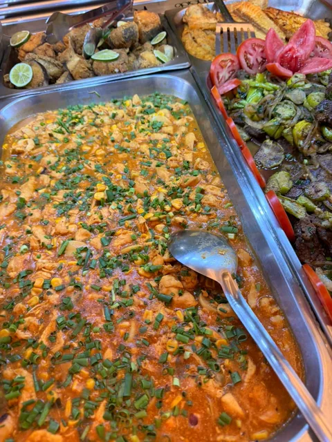
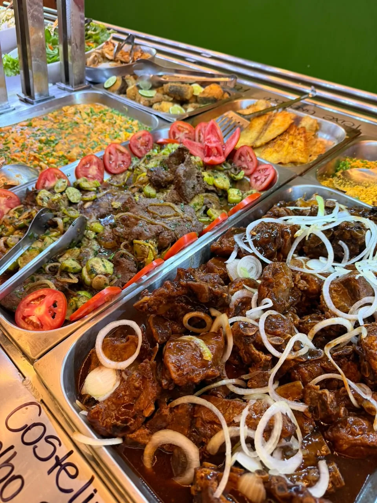
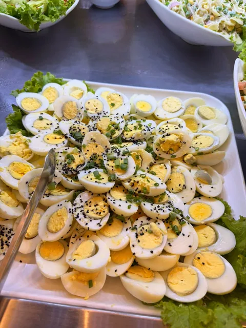
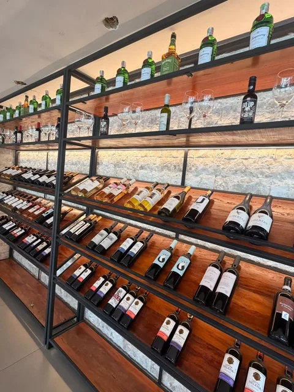
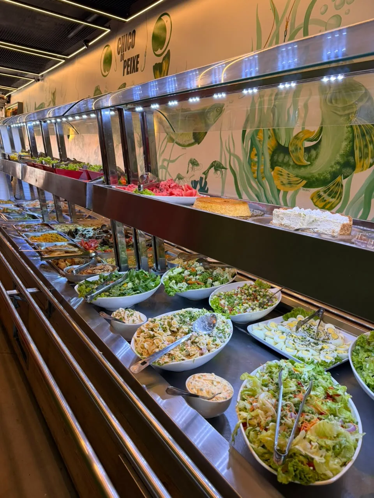

01 / AlmoçoSeu almoço, do seu jeito.
Self-service de segunda a sábado, no almoço. Variedade para montar o prato com os sabores que você gosta.
O sabor dos bons encontros
Do almoço caprichado ao brinde sem pressa. Seu lugar para comer bem e estar junto, no coração de Santa Inês.
Uma história de sabor em BH.
Um convite para se sentir em casa.

Para todos os apetites

01 / AlmoçoSelf-service de segunda a sábado, no almoço. Variedade para montar o prato com os sabores que você gosta.

02 / À mesaAs combinações, os acompanhamentos e aquele toque da casa que fazem a refeição virar um bom momento.

03 / Para brindarNossa nova adega é mais um motivo para escolher a mesa, chamar quem você gosta e aproveitar.
E o peixe que dá nome à casa?
Está esperando por você no cardápio.

Chegue com fome.Mais que uma refeição
Um almoço em família. A conversa que se estende. O encontro com os amigos que estava faltando na semana.
No Chico do Peixe Santa Inês, a boa companhia encontra comida caprichada e um espaço para aproveitar junto.
Vinhos e um novo cantinho para descobrir na sua próxima visita.
O tempero da nossa história
A história da marca começou no bairro Concórdia, com os tira-gostos e o tempero de José Francisco, o Chico. A vontade de receber bem atravessa essa trajetória e segue à mesa em Santa Inês.
Conheça a história completaA gente se encontra aqui
Reúna a família ou os amigos. Fale com a nossa equipe para consultar reservas, disponibilidade e condições.
Conversar pelo WhatsApp Veja as avaliações no Google